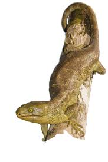
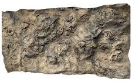

|  |
|
Here is an image of where Monkey tailed skinks reside
|
| Example of a reptile rocky enclosure background  |
| Image of a Monkey tailed skink in its natural habitat |
Monkey tailed skinks; also known as solomon island skinks are a type of lizard which inhabit the solomon Solomon Islands. They are best known for being the biggest skink in the world, however also have traits unlike almost any other skinks: this includes their prehensile tail, and social group behavior. They are also the only fully herbivorous skink.
Monkey tailed skinks are a herbivorous lizard, this means they eat plants.
A small list of plants they enjoy include:
Their diet should be 60-70% leady greens, 20-30% veggies, and 10-15% fruits.
make sure to dust their food with calcium and vitamin D3 supplements to prevent deficiencies.
monkey tailed skinks, unlike most reptiles give live birth. Usually only to 1 child, though twins are possible
monkey tailed skinks are the largest skinks in the world
monkey tailed skinks are the only fully herbivirous skinks
for more information on this lizard; go and visit the wikipedia here
for general information about care and husbandry of this animal; go and check out this website